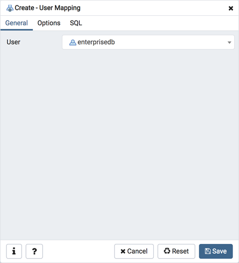
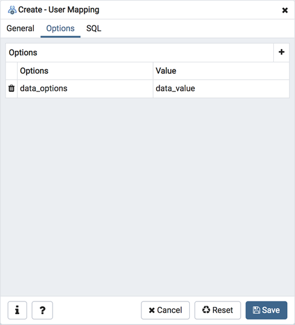
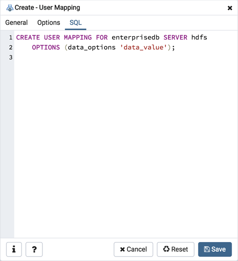

User Mapping Dialog¶
Use the User Mapping dialog to define a new mapping of a user to a foreign server.
The User Mapping dialog organizes the development of a user mapping through the following dialog tabs: General and Options. The SQL tab displays the SQL code generated by dialog selections.
Use the drop-down listbox in the User field in the General tab to identify the connecting role:
Select CURRENT_USER to use the name of the current role.
Select PUBLIC if no other user-specific mapping is applicable.
Select a pre-defined role name to specify the name of an existing user.
Click the Options tab to continue.
Use the fields in the Options tab to specify connection options; the accepted option names and values are specific to the foreign data wrapper associated with the server specified in the user mapping. Click the Add button to add an option/value pair.
Specify the option name in the Option field.
Provide a corresponding value in the Value field.
Click Add to specify each additional option/value pair; to discard an option, click the trash icon to the left of the row and confirm deletion in the Delete Row popup.
Click the SQL tab to continue.
Your entries in the User Mapping dialog generate a SQL command (see an example below). Use the SQL tab for review; revisit or switch tabs to make any changes to the SQL command.
Example¶
The following is an example of the sql command generated by user selections in the User Mapping dialog:
The example shown demonstrates a user mapping for the hdfs_server. The user is CURRENT_USER with a password secret.
Click the Info button (i) to access online help.
Click the Save button to save work.
Click the Cancel button to exit without saving work.
Click the Reset button to restore configuration parameters.